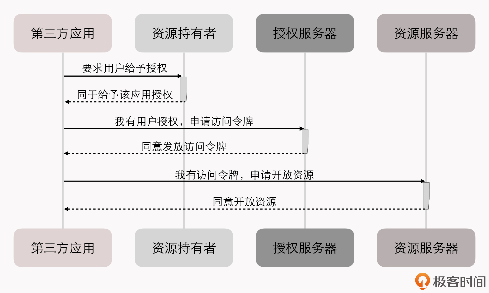
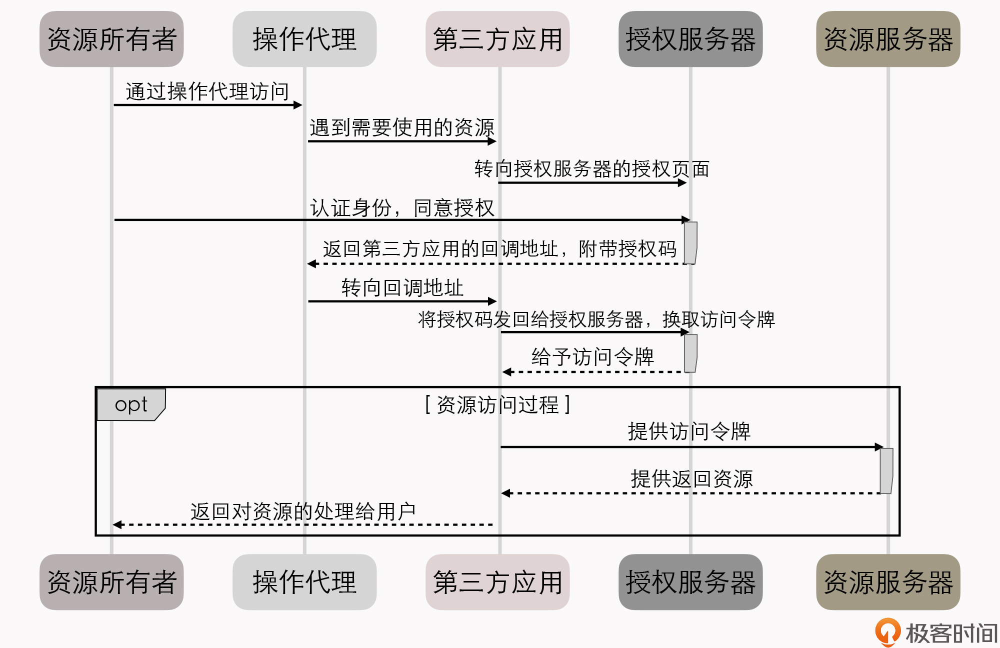
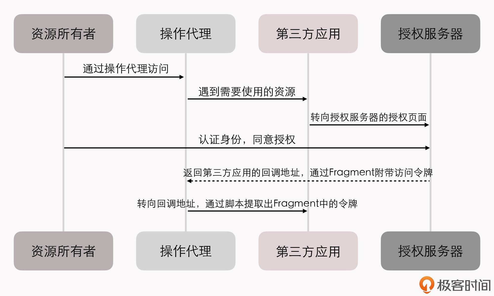
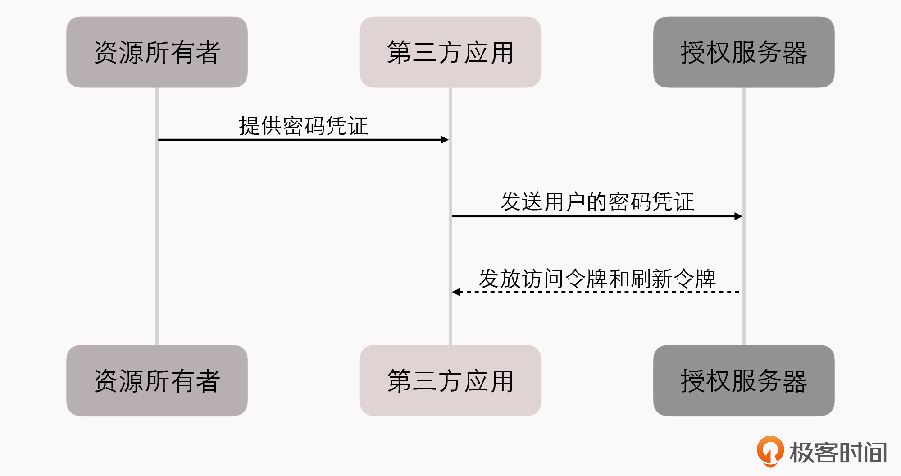
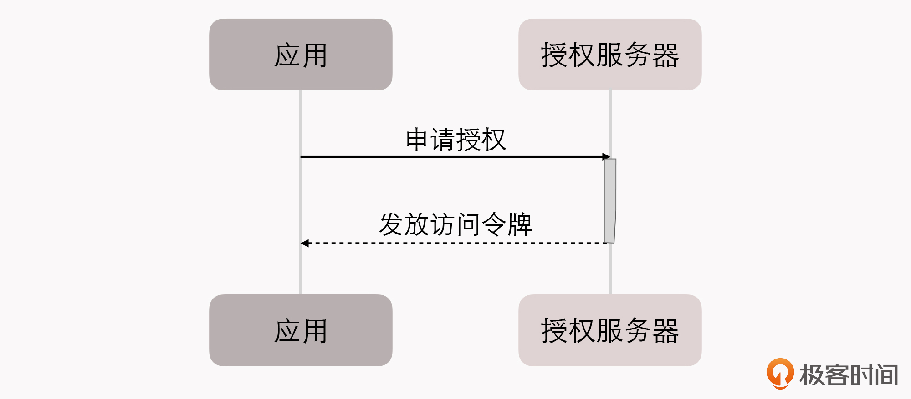
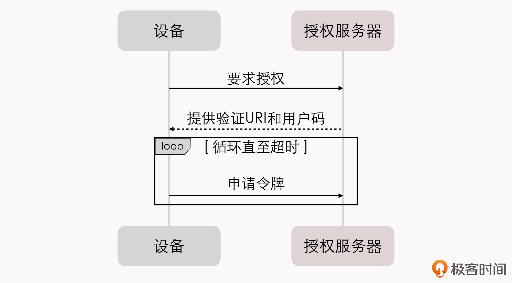

- 00 _导读 _ 什么是“The Fenix Project”？.md.html
- 00 开篇词 _ 如何构建一个可靠的分布式系统？.md.html
- 01 _ 原始分布式时代：Unix设计哲学下的服务探索.md.html
- 02 _ 单体系统时代：应用最广泛的架构风格.md.html
- 03 _ SOA时代：成功理论与失败实践.md.html
- 04 _ 微服务时代：SOA的革命者.md.html
- 05 _ 后微服务时代：跨越软件与硬件之间的界限.md.html
- 06 _ 无服务时代：“不分布式”云端系统的起点.md.html
- 07 _ 远程服务调用（上）：从本地方法到远程方法的桥梁.md.html
- 08 _ 远程服务调用（下）：如何选择适合自己的RPC框架？.md.html
- 09 _ RESTful服务（上）：从面向过程编程到面向资源编程.md.html
- 10 _ RESTful服务（下）：如何评价服务是否RESTful？.md.html
- 11 _ 本地事务如何实现原子性和持久性？.md.html
- 12 _ 本地事务如何实现隔离性？.md.html
- 13 _ 全局事务和共享事务是如何实现的？.md.html
- 14 _ 分布式事务之可靠消息队列.md.html
- 15 _ 分布式事务之TCC与SAGA.md.html
- 16 _ 域名解析系统，优化HTTP性能的第一步.md.html
- 17 _ 客户端缓存是如何帮助服务器分担流量的？.md.html
- 18 _ 传输链路，优化HTTP传输速度的小技巧.md.html
- 19 _ 如何利用内容分发网络来提高网络性能？.md.html
- 20 _ 常见的四层负载均衡的工作模式是怎样的？.md.html
- 21 _ 服务端缓存的三种属性.md.html
- 22 _ 分布式缓存如何与本地缓存配合，提高系统性能？.md.html
- 23 _ 认证：系统如何正确分辨操作用户的真实身份？.md.html
- 24 _ 授权（上）：系统如何确保授权的过程可靠？.md.html
- 25 _ 授权（下）：系统如何确保授权的结果可控？.md.html
- 26 _ 凭证：系统如何保证与用户之间的承诺是准确完整且不可抵赖的？.md.html
- 27 _ 保密：系统如何保证敏感数据无法被内外部人员窃取滥用？.md.html
- 28 _ 传输（上）：传输安全的基础，摘要、加密与签名.md.html
- 29 _ 传输（下）：数字证书与传输安全层.md.html
- 30 _ 验证：系统如何确保提交给服务的数据是安全的？.md.html
- 31 _ 分布式共识（上）：想用好分布式框架，先学会Paxos算法吧.md.html
- 32 _ 分布式共识（下）：Multi Paxos、Raft与Gossip，分布式领域的基石.md.html
- 33 _ 服务发现如何做到持续维护服务地址在动态运维中的时效性？.md.html
- 34 _ 路由凭什么作为微服务网关的基础职能？.md.html
- 35 _ 如何在客户端实现服务的负载均衡？.md.html
- 36 _ 面对程序故障，我们该做些什么？.md.html
- 37 _ 要实现某种容错策略，我们该怎么做？.md.html
- 38 _ 限流的目标与模式.md.html
- 39 _ 如何构建零信任网络安全？.md.html
- 40 _ 如何实现零信任网络下安全的服务访问？.md.html
- 41 _ 分布式架构中的可观测到底说的是什么？.md.html
- 42 _ 分析日志真的没那么简单.md.html
- 43 _ 一个完整的分布式追踪系统是什么样子的？.md.html
- 44 _ 聚合度量能给我们解决什么问题？.md.html
- 45 _ 模块导学：从微服务到云原生.md.html
- 46 _ 容器的崛起（上）：文件、访问、资源的隔离.md.html
- 47 _ 容器的崛起（下）：系统、应用、集群的封装.md.html
- 48 _ 以容器构建系统（上）：隔离与协作.md.html
- 49 _ 以容器构建系统（下）：韧性与弹性.md.html
- 50 _ 应用为中心的封装（上）：Kustomize与Helm.md.html
- 51 _ 应用为中心的封装（下）：Operator与OAM.md.html
- 52 _ Linux网络虚拟化（上）：信息是如何通过网络传输被另一个程序接收到的？.md.html
- 53 _ Linux网络虚拟化（下）：Docker所提供的容器通讯方案有哪些？.md.html
- 54 _ 容器网络与生态：与CNM竞争过后的CNI下的网络插件生态.md.html
- 55 _ 谈谈Kubernetes的存储设计理念.md.html
- 56 _ Kubernetes存储扩展架构：一个真实的存储系统如何接入或移除新存储设备？.md.html
- 57 _ Kubernetes存储生态系统：几种有代表性的CSI存储插件的实现.md.html
- 58 _ Kubernetes的资源模型与调度器设计.md.html
- 59 _ 透明通讯的涅槃（上）：通讯的成本.md.html
- 60 _ 透明通讯的涅槃（下）：控制平面与数据平面.md.html
- 61 _ 服务网格与生态：聊聊服务网格的两项标准规范.md.html
- 62 _ Fenix's Bookstore的前端工程.md.html
- 63 _ 基于Spring Boot的单体架构.md.html
- 64 _ 基于Spring Cloud的微服务架构.md.html
- 65 _ 基于Kubernetes的微服务架构.md.html
- 66 _ 基于Istio的服务网格架构.md.html
- 67 _ 基于云计算的无服务架构.md.html
- 春节特别放送（上）_ 有的放矢，事半功倍.md.html
- 春节特别放送（下）_ 积累沉淀，知行合一.md.html
- 用户故事 _ 詹应达：持续成长，不惧未来.md.html
- 结束语 _ 程序员之路.md.html
- 结课测试 _ 一套习题，测出你的掌握程度.md.html
- 捐赠
24 _ 授权（上）：系统如何确保授权的过程可靠？
你好，我是周志明。
在上节课，我们探讨了信息系统中关于安全认证的相关话题，它主要解决的是“你是谁”的问题。那么今天我们要探讨的授权话题，是要解决“你能干什么”的问题。
“授权”这个概念通常伴随着“认证”“审计”“账号”一同出现，被合称为AAAA（Authentication、Authorization、Audit、Account）。授权行为在程序中的应用也是非常广泛的，我们给某个类或某个方法设置范围控制符（如public、protected、private、 ），本质上也是一种授权（访问控制）行为。
而在安全领域中，我们所谈论的授权就更要具体一些，它通常涉及到以下两个相对独立的问题：
- 确保授权的过程可靠
对于单一系统来说，授权的过程是比较容易做到可控的，以前在很多语境上提到授权，实质上讲的都是访问控制，理论上两者是应该分开的。
而在涉及多方的系统中，授权过程则是一个比较困难，但必须要严肃对待的问题：如何既让第三方系统能够访问到所需的资源，又能保证其不泄露用户的敏感数据？现在，常用的多方授权协议主要有OAuth 2.0和SAML 2.0（两个协议涵盖的功能并不是直接对等的）。
- 确保授权的结果可控
授权的结果是用于对程序功能或者资源的访问控制（Access Control）。现在，已形成理论体系的权限控制模型有很多，比如自主访问控制（Discretionary Access Control，DAC）、强制访问控制（Mandatory Access Control，MAC）、基于属性的访问控制（Attribute-Based Access Control，ABAC），还有最为常用的基于角色的访问控制（Role-Based Access Control，RBAC）。
所以，在接下来的两节课中，我们将会围绕前面这两个问题，分别以Fenix’s Bookstore中用到的OAuth 2.0和RBAC为例，去探讨软件业界中授权的标准协议与实现。
好，下面我们就先来看看，OAuth 2.0的具体工作流程是什么样的吧。
OAuth 2.0解决的是第三方服务中涉及的安全授权问题
OAuth 2.0是一种相对复杂繁琐的认证授权协议。它是在RFC 6749中定义的国际标准，RFC 6749正文的第一句就阐明了OAuth 2.0是面向于解决第三方应用（Third-Party Application）的认证授权协议。
如果你的系统并不涉及到第三方，比如单体架构的Fenix’s Bookstore中，就既不为第三方提供服务，也不使用第三方的服务，那引入OAuth 2.0其实就没必要。
这里我为什么要强调第三方呢？在多方系统授权的过程中，具体会有什么问题，需要专门制定一个标准协议来解决呢？
我举个现实的例子来给你解释一下。“The Fenix Project”这部文档的官方网站，它的建设和更新的大致流程是：我以Markdown形式写好了某篇文章，上传到由GitHub提供的代码仓库，接着由Travis-CI提供的持续集成服务会检测到该仓库发生了变化，触发一次Vuepress编译活动，生成目录和静态的HTML页面，然后推送回GitHub Pages，再触发国内的CDN缓存刷新。
如果要想保证这个过程能顺利进行，就存在一系列必须要解决的授权问题，Travis-CI只有得到了我的明确授权，GitHub才能同意它读取我代码仓库中的内容。问题是，它该如何获得我的授权呢？
一种最简单粗暴的方案是把我的用户账号和密码都告诉Travis-CI，但这显然会导致下面这些问题：
- 密码泄漏：如果Travis-CI被黑客攻破，将导致我的GitHub的密码也同时被泄漏。
- 访问范围：Travis-CI将有能力读取、修改、删除、更新我放在GitHub上的所有代码仓库，而我并不希望它能够修改删除文件。
- 授权回收：只有修改密码才能回收我授予给Travis-CI的权限，可是我在GitHub的密码只有一个，授权的应用除了Travis-CI之外却还有许多，修改了就意味着所有别的第三方的应用程序会全部失效。
那么，前面列举的这些问题，也正是OAuth 2.0所要解决的问题，尤其是要求第三方系统在没有支持HTTPS传输安全的环境下，依然能够解决这些问题，这可不是件容易的事情。
因此，OAuth 2.0给出了很多种解决办法，这些办法的共同特征是以令牌（Token）代替用户密码作为授权的凭证。有了令牌之后，哪怕令牌被泄漏，也不会导致密码的泄漏；令牌上可以设定访问资源的范围以及时效性；每个应用都持有独立的令牌，哪个失效都不会波及其他。
这样一下子前面提出的三个问题就都解决了，有了一层令牌之后，整个授权的流程如下图所示：

这个时序图里涉及到了OAuth 2.0中的几个关键术语，我们根据前面的例子，一起来解读下它们的含义，这对理解后面要介绍的几种授权模式非常重要：
- 第三方应用（Third-Party Application）：需要得到授权访问我资源的那个应用，即此场景中的“Travis-CI”。
- 授权服务器（Authorization Server）：能够根据我的意愿提供授权（授权之前肯定已经进行了必要的认证过程，但它与授权可以没有直接关系）的服务器，即此场景中的“GitHub”。
- 资源服务器（Resource Server）：能够提供第三方应用所需资源的服务器，它与认证服务可以是相同的服务器，也可以是不同的服务器，即此场景中的“我的代码仓库”。
- 资源所有者（Resource Owner）： 拥有授权权限的人，即此场景中的“我”。
- 操作代理（User Agent）：指用户用来访问服务器的工具，对于人类用户来说，这个通常是指浏览器。但在微服务中，一个服务经常会作为另一个服务的用户，此时指的可能就是HttpClient、RPCClient或者其他访问途径。
OAuth 2.0的认证流程
当然，“用令牌代替密码”确实是解决问题的好方法，但这充其量只能算个思路，距离可实施的步骤还是不够具体。所以，时序图中的“要求/同意授权”“要求/同意发放令牌”“要求/同意开放资源”这几个服务请求、响应要如何设计，就是执行步骤的关键了。
对此，OAuth 2.0一共提出了四种不同的授权方式（这是我为什么说OAuth 2.0较为复杂繁琐的其中一个原因），分别为：
- 授权码模式（Authorization Code）
- 简化模式（Implicit）
- 密码模式（Resource Owner Password Credentials）
- 客户端模式（Client Credentials）
接下来，我们就一一来解读下这四种授权方式的具体流程，以此理解OAuth 2.0是如何实现多方系统中相对安全、相对可控的授权的。
授权码模式
授权码模式是四种模式中最严（luō）谨（suō）的，它考虑到了几乎所有敏感信息泄露的预防和后果。我们来看看这种模式的具体步骤：

这里你要注意，在开始进行授权过程之前，第三方应用要先到授权服务器上进行注册。所谓的注册，是指第三方应用向认证服务器提供一个域名地址，然后从授权服务器中获取ClientID和ClientSecret，以便能够顺利完成如下的授权过程：
- 第三方应用将资源所有者（用户）导向授权服务器的授权页面，并向授权服务器提供ClientID及用户同意授权后的回调URI，这是第一次客户端页面转向。
- 授权服务器根据ClientID确认第三方应用的身份，用户在授权服务器中决定是否同意向该身份的应用进行授权。注意，用户认证的过程未定义在此步骤中，在此之前就应该已经完成。
- 如果用户同意授权，授权服务器将转向第三方应用在第1步调用中提供的回调URI，并附带上一个授权码和获取令牌的地址作为参数，这是第二次客户端页面转向。
- 第三方应用通过回调地址收到授权码，然后将授权码与自己的ClientSecret一起作为参数，通过服务器向授权服务器提供的获取令牌的服务地址发起请求，换取令牌。该服务器的地址应该与注册时提供的域名处于同一个域中。
- 授权服务器核对授权码和ClientSecret，确认无误后，向第三方应用授予令牌。令牌可以是一个或者两个，其中必定要有的是访问令牌（Access Token），可选的是刷新令牌（Refresh Token）。访问令牌用于到资源服务器获取资源，有效期较短，刷新令牌用于在访问令牌失效后重新获取，有效期较长。
- 资源服务器根据访问令牌所允许的权限，向第三方应用提供资源。
由此你也能看到，这个过程设计已经考虑到了几乎所有合理的意外情况。这里我再给你举几个容易遇到的意外情况的例子，以便你能够更好地理解为何OAuth 2.0要这样设计：
- 会不会有其他应用冒充第三方应用骗取授权？
ClientID代表一个第三方应用的“用户名”，这项信息是可以完全公开的。但ClientSecret应当只有应用自己才知道，这个代表了第三方应用的“密码”。在第5步发放令牌时，调用者必须能够提供ClientSecret才能成功完成。只要第三方应用妥善保管好ClientSecret，就没有人能够冒充它。
- 为什么要先发放授权码，再用授权码换令牌？
这是因为客户端转向（通常就是一次HTTP 302重定向）对于用户是可见的。换言之，授权码可能会暴露给用户以及用户机器上的其他程序，但由于用户并没有ClientSecret，光有授权码也无法换取到令牌，所以就避免了令牌在传输转向过程中被泄漏的风险。
- 为什么要设计一个时限较长的刷新令牌和时限较短的访问令牌？不能直接把访问令牌的时间调长吗？- - 这是为了缓解OAuth 2.0在实际应用中的一个主要缺陷。因为通常情况下，访问令牌一旦发放，除非超过了令牌中的有效期，否则很难有其他方式让它失效。所以访问令牌的时效性一般会设计得比较短，比如几个小时，如果还需要继续用，那就定期用刷新令牌去更新，授权服务器可以在更新过程中决定是否还要继续给予授权。至于为什么说很难让它失效，我们将放到下一讲“凭证”中去解释。
不过，尽管授权码模式是很严谨的，但它并不够好用，这不仅仅体现在它那繁复的调用过程上，还体现在它对第三方应用提出了一个“貌似不难”的要求：第三方应用必须有应用服务器，因为第4步要发起服务端转向，而且要求服务端的地址必须与注册时提供的地址在同一个域内。
你不要觉得，要求一个系统要有应用服务器是天经地义理所当然的事情，“The Fenix Project”这部文档的官方网站就没有任何应用服务器的支持，里面使用到了Gittalk作为每篇文章的留言板，它对GitHub来说照样是第三方应用，需要OAuth 2.0授权来解决。
除了基于浏览器的应用外，现在越来越普遍的是移动或桌面端的客户端Web应用（Client-Side Web Applications），比如现在大量的基于Cordova、Electron、Node-Webkit.js的PWA应用，它们都不会有应用服务器的支持。
正是因为有这样的实际需求，就引出了OAuth 2.0的第二种授权模式：隐式授权。
隐式授权
隐式授权省略掉了通过授权码换取令牌的步骤，整个授权过程都不需要服务端的支持，一步到位。而使用的代价是在隐式授权中，授权服务器不会再去验证第三方应用的身份，因为已经没有应用服务器了，ClientSecret没有人保管，就没有存在的意义了。
但隐式授权中的授权服务器，还是会限制第三方应用的回调URI地址必须与注册时提供的域名一致，虽然有可能会被DNS污染之类的攻击所攻破，但这也算是它尽可能地努力了一下吧。同样的原因，隐式授权也不能避免令牌暴露给资源所有者，不能避免用户机器上可能意图不轨的其他程序、HTTP的中间人攻击等风险。
隐式授权的调用时序图如下图所示（后面展示的几种授权模式，时序图中我就不再画出资源访问部分的内容了，就是前面授权码图例中opt框里的那一部分，以便更聚焦重点）：

你可以发现，在这个交互过程里，隐式模式与授权码模式的显著区别是授权服务器在得到用户授权后，直接返回了访问令牌，这很明显会降低授权的安全性。
但OAuth 2.0仍然在尽可能地努力做到相对安全，比如前面我提到在隐式授权中，尽管不需要用到服务端，但仍然需要在注册时提供回调域名，此时会要求该域名与接受令牌的服务处于同一个域内。此外，同样基于安全考虑，在隐式模式中也明确禁止发放刷新令牌。
还有一点，在RFC 6749对隐式授权的描述中，特别强调了令牌必须是“通过Fragment带回”的。如果你对超文本协议没有多少了解的话，可能还不知道Fragment是个什么东西，我们来看一下它的英文释义。
Fragment- In computer hypertext, a fragment identifier is a string of characters that refers to a resource that is subordinate to another, primary resource. The primary resource is identified by a Uniform Resource Identifier (URI), and the fragment identifier points to the subordinate resource.- ——URI Fragment，Wikipedia
要是你看完后，还是觉得概念不好理解的话，我就简单告诉你，Fragment就是地址中“#”号后面的部分，比如这个地址：
后面的/detail/1便是Fragment，这个语法是在RFC 3986中定义的。该规范中解释了这是用于客户端定位的URI从属资源，比如在HTML中，就可以使用Fragment来做文档内的跳转而不会发起服务端请求。
此外，RFC 3986还规定了，如果浏览器对一个带有Fragment的地址发出Ajax请求，那Fragment是不会跟随请求被发送到服务端的，只能在客户端通过Script脚本来读取。
所以，隐式授权巧妙地利用这个特性，尽最大努力地避免了令牌从操作代理到第三方服务之间的链路，存在被攻击而泄露出去的可能性。
至于认证服务器到操作代理之间的这一段链路的安全，则只能通过TLS（即HTTPS）来保证不会受到中间人攻击了，我们可以要求认证服务器必须都是启用HTTPS的，但无法要求第三方应用同样都支持HTTPS。
密码模式
前面所说的授权码模式和隐式模式都属于纯粹的授权模式，它们与认证没有直接的联系，如何认证用户的真实身份，跟如何进行授权是两个互相独立的过程。但在密码模式里，认证和授权就被整合成了同一个过程。
密码模式原本的设计意图是，仅限于在用户对第三方应用是高度可信任的场景中使用，因为用户需要把密码明文提供给第三方应用，第三方以此向授权服务器获取令牌。
这种高度可信的第三方是非常罕见的，尽管在介绍OAuth 2.0的材料中，经常举的例子是“操作系统作为第三方应用向授权服务器申请资源”，但真实应用中极少遇到这样的情况，合理性依然十分有限。
我认为，如果要采用密码模式，那“第三方”属性就必须弱化，把“第三方”看作是系统中与授权服务器相对独立的子模块，在物理上独立于授权服务器部署，但是在逻辑上与授权服务器仍同属一个系统。这样把认证和授权一并完成的密码模式，才会有合理的应用场景。
比如说，Fenix’s Bookstore就直接采用了密码模式，将认证和授权统一到一个过程中完成，尽管Fenix’s Bookstore中的Frontend工程和Account工程，都能直接接触到用户名和密码，但它们事实上都是整个系统的一部分，在这个前提下密码模式才具有可用性（关于分布式系统各个服务之间的信任关系，我会在“零信任网络”与“服务安全”两讲中和你作进一步讨论）。
这样，理解了密码模式的用途，你再去看它的调用过程就很简单了，也就是第三方应用拿着用户名和密码向授权服务器换令牌而已。具体的时序如下图所示：

此外你还要明确一件事，在密码模式下，“如何保障安全”的职责无法由OAuth 2.0来承担，只能由用户和第三方应用来自行保障，尽管OAuth 2.0在规范中强调到“此模式下，第三方应用不得保存用户的密码”，但这并没有任何技术上的约束力。
OK，我们再来看看OAuth 2.0的最后一种授权模式：客户端模式。
客户端模式
客户端模式是四种模式中最简单的，它只涉及到两个主体：第三方应用和授权服务器。如果我们严谨一点，现在叫“第三方应用”其实已经不合适了，因为已经没有了“第二方”的存在，资源所有者、操作代理在客户端模式中都是不必出现的。甚至严格来说，叫“授权”都已经不太恰当，毕竟资源所有者都没有了，也就不会有谁授予谁权限的过程。
那么，客户端模式就是指第三方应用（考虑到前后统一，我们还是继续沿用这个称呼）以自己的名义，向授权服务器申请资源许可。这种模式通常用于管理操作或者自动处理类型的场景中。
举个具体例子。比如我开了一家叫Fenix’s Bookstore的书店，因为小本经营，不像京东那样全国多个仓库可以调货，因此我必须保证只要客户成功购买，书店就必须有货可发，不允许超卖。但问题是，经常有顾客下了订单又拖着不付款，导致部分货物处于冻结状态。
所以，Fenix’s Bookstore中有一个订单清理的定时服务，自动清理超过两分钟还未付款的订单。在这个场景里，订单肯定是属于下单用户自己的资源，如果把订单清理服务看作是一个独立的第三方应用的话，它是不可能向下单用户去申请授权来删掉订单的，而是应该直接以自己的名义，向授权服务器申请一个能清理所有用户订单的授权。那么这个客户端模式的时序就会是这样的：

在微服务架构中，其实并不提倡同一个系统的各服务间有默认的信任关系，所以服务之间的调用也需要先进行认证授权，然后才能通讯。
那么此时，客户端模式便是一种常用的服务间认证授权的解决方案。Spring Cloud版本的Fenix’s Bookstore就是采用这种方案，来保证微服务之间的合法调用的；而Istio版本的Fenix’s Bookstore则启用了双向mTLS通讯，使用客户端证书来保障安全。它们可作为上一节课我介绍认证时，提到的“通讯信道认证”和“通讯内容认证”的例子，你要是感兴趣可以对比一下这两种方式的差异优劣。
此外，在OAuth 2.0中呢，还有一种与客户端模式类似的授权模式，在RFC 8628中定义为“设备码模式”（Device Code），这里我顺带提一下。
设备码模式用于在无输入的情况下区分设备是否被许可使用，典型的应用就是手机锁网解锁（锁网在国内较少，但在国外很常见）或者设备激活（比如某游戏机注册到某个游戏平台）的过程。它的时序如下图所示：

这里你可以记着，采用设备码模式在进行验证时，设备需要从授权服务器获取一个URI地址和一个用户码，然后需要用户手动或设备自动地到验证URI中输入用户码。在这个过程中，设备会一直循环，尝试去获取令牌，直到拿到令牌或者用户码过期为止。
小结
这节课，我们学习了如何使用OAuth 2.0来解决涉及到多方系统调用时可靠授权的问题，并详细了解了OAuth 2.0协议的授权码模式、隐式授权模式、密码模式和客户端模式的工作流程。
实际上，无论是哪一种授权模式，它们都属于保障授权过程可靠的实现方案。那么，系统要如何确保授权的结果可控呢？别着急，在下节课中，我就来给你揭晓答案。
一课一思
OAuth 2.0的核心思想是令牌代替密码，令牌是我们讲“凭证”这节课的主角，在这里你能否先想象一下，所谓的“令牌”应该是一种怎样的数据结构？它有什么特点？有什么必须的信息？
欢迎在留言区分享你的答案。如果你觉得有收获，也欢迎把今天的内容分享给更多的朋友。感谢你的阅读，我们下一讲再见。
© 2019 - 2023 Liangliang Lee. Powered by gin and hexo-theme-book.